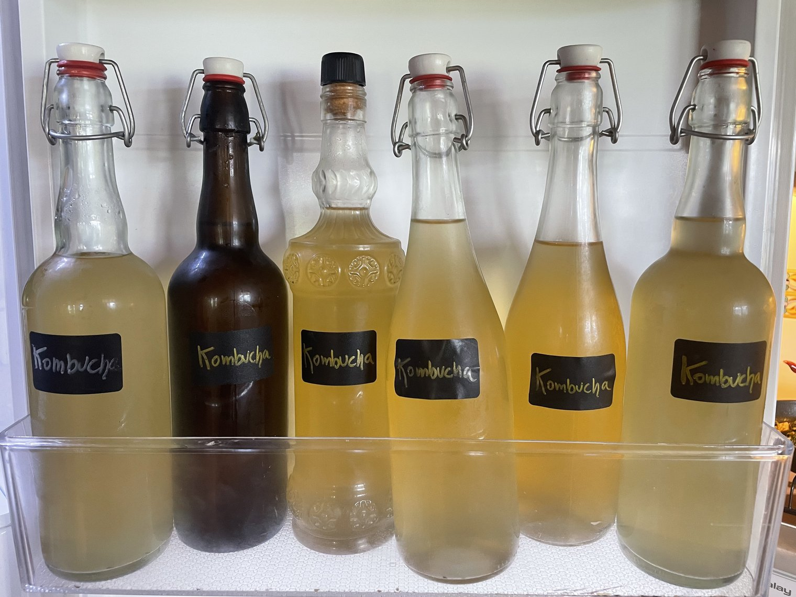

Kombucha
Ingredients
6×
- 4 cdtas de té verde o negro
- 1 l de agua caliente
- 100 g de azúcar
- 2 l de agua fría
- 1 scoby
- 200 ml de kombucha de la tanda anterior

Preparación
Paso 1
Infusionar 4 cdtas de té verde o negro en 1 l de agua caliente 10min, colar y disolver 100 g de azúcar. Añadir 2 l de agua fría.
Paso 2
Cuando esté a temperatura ambiente, verter en un tarro grande con 1 scoby y 200 ml de kombucha de la tanda anterior. Tapar con un paño y dejar fermentar 7-10 días.
Paso 3
Embotellar en botellas con tapón mecánico (se puede añadir fruta o jengibre) y dejar 2-3 días más a temperatura ambiente para que haga gas. Guardar en la nevera.